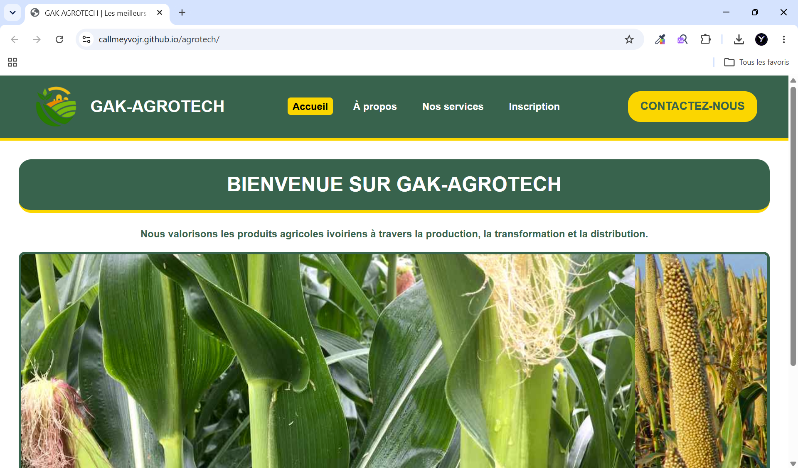

PHOTO DU PROJETAjoute assets/images/agrotech.pngPROJET 01SITE WEB · AGRICULTURE
Agrotech
Une plateforme agricole virtuelle réalisée à la main. Elle me permet de pratiquer la construction d'une interface web et de présenter un projet lié au domaine agricole.